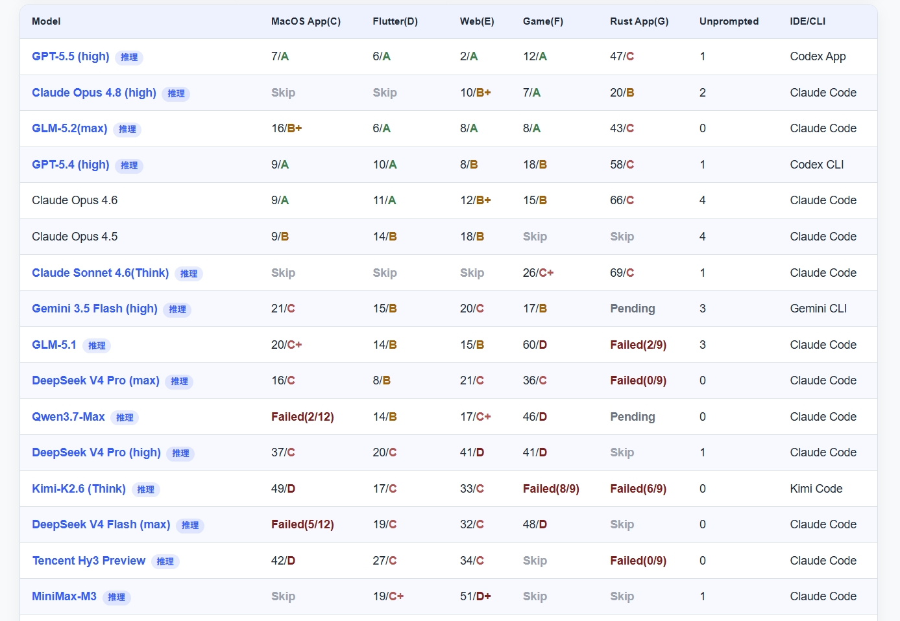

产品更新 · Coding Plan
GLM-5.2 全量开放 Coding Plan：1M 上下文登场，Code V3 私有评测跃居第三
本页内容
更新日期 2026.6.13 数据来源 https://vibecoding.dreamfree.space
本次核心更新：6 月 13 日 17:21 起 GLM-5.2 面向 GLM Coding Plan 全量用户开放；官方称 1M 可用上下文；API 与 MIT 开源计划下周上线；智谱尚未公布 SWE-bench 等官方榜单；LLM Benchmark Code V3 中 GLM-5.2(max) 综合第 3，公开 5 工程中获 3 个 A 档，维护者称可用性持平 Opus 4.8、大幅领先其他国产模型。
2026 年 6 月 13 日，智谱正式发布 GLM-5.2，并向 GLM Coding Plan 存量用户全量开放。官方 benchmark 尚空，但 Code V3 榜单维护者 toyama nao（知乎 llm2014 /「玩具匠」）在同日发布的解读中给出判断：GLM-5.2 把 Coding 能力推到世界一流模型的门口，并在国产模型中首次拉开代差。本文结合其解读与公开 CSV 数据，说明 GLM-5.2 相对 GLM-5.1 与同梯队模型意味着什么。
一、GLM-5.2 核心升级：从 200K 到 1M
1. 真正可用的 1M 上下文
GLM-5.2 将可用上下文从 GLM-5.1 的约 200K 提升到 1,000,000 tokens（开发者侧常见标识 glm-5.2[1m]）。Code V3 维护者指出，GLM-5.1 在超过 100K 后注意力快速散失，是此前「榜单不差、实战却拉胯」的主因之一；1M 窗口的目标，正是让 Agent 少压缩、少遗忘。
2. High / Max 双档 Thinking Effort
GLM-5.2 引入 High / Max 两档思考强度。复杂 Coding 与架构级 Debug 建议使用 Max；Claude Code 内可通过 /effort → max 切换。
3. 与 GLM-5.1 高速版并存
GLM-5.1 高速版（2026 年 5 月，约 400 tokens/s）仍适用于低延迟补全；GLM-5.2 定位长上下文旗舰，二者按场景切换即可。
二、Code V3 私有评测：官方榜单空缺下的参考坐标
1. 榜单来源
智谱尚未发布 GLM-5.2 官方 benchmark 时，可参考维护者 toyama nao（llm2014）的 LLM Benchmark Code V3——个人私有题库、Agent 实装向，维护者亦提醒「不可盲信任何评测」。GLM-5.2 以 GLM-5.2(max) + Claude Code 入榜；下图为 2026-06 月榜截图，下文结合 CSV 与维护者解读展开。

2. 综合排序：GLM-5.2(max) 暂列总榜第三
按该 CSV 当前行序（维护者按综合表现排序），GLM-5.2(max) 位列第 3，仅次于 GPT-5.5 (high) 与 Claude Opus 4.8 (high)，领先于 GPT-5.4 (high)、Claude Opus 4.6 等主流闭源模型。在国产 / 可经由 Coding Plan 使用的模型中，GLM-5.2 为本轮 Code V3 最高分；同榜 GLM-5.1 排在第 9 位，DeepSeek V4 Pro (max)、MiniMax-M3 等亦在榜，但综合位次低于 GLM-5.2。
需再次强调：这是单一维护者、私有题目、小样本的 Agent 实装测试，不能等价为 SWE-bench Verified / Terminal-Bench 官方结果；但在智谱尚未发布 GLM-5.2 官方 benchmark 的窗口期，它是目前可核对原始 CSV、可复现查询路径的重要参考。
3. 与 GLM-5.1 的代际跃迁：从「过不了 5 关」到「3 个 A」
维护者在解读中回顾：GLM-5.1 曾是国产模型中第一个真正冲过 Sonnet 把持的「编程基本可用线」，但超过 100K 后注意力快速散失，真实 Agent 环境下可用性明显下滑——若非这一短板，5.1 当时会更接近 Opus 4.5（非推理模式）。此后约两个月里，DeepSeek V4、Qwen3.7-Max、Kimi K2.6 等多次挑战国产 Coding SOTA 均未超越 GLM-5.1；而北美侧 GPT-5.5、Opus 4.8 继续抬升天花板。
GLM-5.2 的核心修复点，正是 1M 上下文 + 后训练 对长链路的托底。公开 CSV 对比如下：
| 场景 | GLM-5.1 | GLM-5.2 (max) | 变化解读 |
|---|---|---|---|
| MacOS App | 20 / C+ | 16 / B+ | 效率与等级双提升 |
| Flutter | 14 / B | 6 / A | 跃升至 A 档 |
| Web | 15 / B | 8 / A | 跃升至 A 档 |
| Game | 60 / D | 8 / A | 此前最弱项大幅修复 |
| Rust App | Failed (2/9) | 43 / C | 由失败变为可完成 |
维护者强调：GLM-5.1 无法完成全部 5 个公开工程；GLM-5.2 则在其中拿下 3 个 A 档（Flutter / Web / Game）。A 档在其体系里表示「几乎不犯错、需求理解一步到位」——这是比 CSV 数字更关键的可用性定义。
4. 与 Opus 4.8：持平还是略输？
按 CSV 行序，GLM-5.2(max) 总榜第 3，仅次于 GPT-5.5 与 Claude Opus 4.8。维护者认为：在公开 5 工程中，GLM-5.2 的可用性可与 Opus 4.8 持平；Mac、Rust 等小众场景略弱，但仍能不经深度人工干预完成项目。
读表时需注意 Opus 4.8 的 Skip：
| 模型 | MacOS | Flutter | Web | Game | Rust |
|---|---|---|---|---|---|
| Claude Opus 4.8 (high) | Skip | Skip | 10/B+ | 7/A | 20/B |
| GLM-5.2 (max) | 16/B+ | 6/A | 8/A | 8/A | 43/C |
维护者解释：Opus 4.8 在 MacOS / Flutter 未复测，是因为前代已在对应场景拿到 A，新版默认沿用 A，不再跑题——因此不宜把 Skip 简单理解成「未测 = 弱项」。在 Game 场景，二者均为 A 档，且维护者给出了一组消耗对比（维护者自述，未写入 CSV）：
- Opus 4.8 (high)：564 次 tool calls，输出约 260K tokens
- GLM-5.2 (max)：557 次 tool calls，输出约 170K tokens
成绩相近时，GLM-5.2 的调用与输出更省；但需注明这是 max 对 high 的错位对比，不能当作同档位公平赛。
与 GPT-5.5 相比，GLM-5.2 在 Web（8/A vs 2/A） 等路径上仍有差距；Flutter 6/A 则与 GPT-5.5 同级，为本轮亮点。
5. 隐藏工程与国产横向对比
除公开 5 题外，维护者还测试了 2 个复杂度更高的隐藏工程（未公开题目，未写入 CSV）：
- GLM-5.2 首次参与，均以 C 档通过，高难度环节通常只需 2～3 轮修正
- GLM-5.1 与 DeepSeek 在该隐藏题上无法完成
在公开 CSV 的国产横向对比中：
| 模型 | MacOS | Flutter | Web | Game | Rust |
|---|---|---|---|---|---|
| DeepSeek V4 Pro (max) | 16/C | 8/B | 21/C | 36/C | Failed |
| MiniMax-M3 | Skip | 19/C+ | 51/D+ | Skip | Skip |
| Kimi-K2.6 (Think) | 49/D | 17/C | 33/C | Failed | Failed |
维护者的总结性判断（评测者观点，非第三方共识）：GLM-5.2 大幅领先其他国产模型，国产 Coding 能力第一次在国内拉开「代差」；是否与 Opus / GPT「持平」则因任务而异。
6. 1M 上下文在实测里体现在哪？
维护者从工程行为归纳了几点（与官方「1M 可用」叙事相互印证）：
- 架构规范性：跨技术栈能遵循「好实践」（未必是最佳实践），倾向多写代码、填实细节；5 个公开工程平均代码量比在测模型高约 30%
- 少漏细节：代码量更高的情况下，仍较少出现「看漏已有代码」导致的 Bug——被归因于 1M 窗口能装下更多上下文
- UI 审美：前端直出较朴素克制，不擅自动效炫技；但交互可用性高（隐藏题 E2 需在极小手势空间里做 clip 转场，此前模型多翻车，GLM-5.2 通过）
- Rust / 新库短板：G 类工程需大量较新三方库 API 时，GLM 更依赖试错推理，不如 GPT 主动检索官方文档；补充文档与背景知识后表现会明显改善
7. 如何正确理解这份榜单？
- 定位：私有 Code V3 ≠ 行业标准；维护者 README 亦提醒「不可盲信任何评测」。
- 数据来源分层：CSV 可核对；隐藏题、tool call 统计、代码量 +30% 等来自维护者知乎解读，非独立第三方复现。
- 条件：GLM-5.2 为 max + Claude Code + Think；换客户端或 effort 档位，结果会变。
- 下一步：智谱官方 SWE-bench 落地后以厂商表格为准；可关注 Code V3 后续月榜是否纳入 GLM-5.2 其他变体。
三、开放节奏：Coding Plan 今起可用，API 与权重下周
据智谱官方消息（经 IT之家、第一财经等媒体报道），2026 年 6 月 13 日 17:21 起，GLM-5.2 已向 GLM Coding Plan 用户全量开放（Lite / Pro / Max / 团队版）。API 与 MIT 开源权重计划下周上线。
| 用户类型 | 当前 | 下周预期 |
|---|---|---|
| Coding Plan 订阅用户 | 套餐内直接可用 GLM-5.2 | 持续可用 |
| API / 第三方集成 | 等待 API | OpenAI 兼容端点 |
| 本地部署 | 等待权重 | MIT 协议 |
「全量开放模型」≠ Coding Plan 不限购——新用户仍需按平台规则抢购套餐。
四、GLM Coding Plan：价格未变，GLM-5.2 直接纳入
| 套餐 | 连续包月 | 5 小时请求 | 月请求 | 核心定位 |
|---|---|---|---|---|
| Lite | ¥49 | 1,200 | 24,000 | 入门 |
| Pro | ¥149 | 6,000 | 120,000 | 个人主力 |
| Max | ¥469 | 24,000 | 480,000 | 团队 / 高强度 Agent |
三档 + 团队版均可调用 GLM-5.2；1M 上下文长会话更消耗 Token 计量，重度用户优先 Pro 以上。订阅入口：智谱 AI GLM Coding Plan
五、接入指南：Claude Code 与 OpenClaw
Claude Code
{
"env": {
"CLAUDE_CODE_AUTO_COMPACT_WINDOW": "1000000",
"ANTHROPIC_DEFAULT_HAIKU_MODEL": "glm-4.5-air",
"ANTHROPIC_DEFAULT_SONNET_MODEL": "glm-5.2[1m]",
"ANTHROPIC_DEFAULT_OPUS_MODEL": "glm-5.2[1m]"
}
}
会话内 /effort → max，与 Code V3 榜单中 GLM-5.2(max) 的测试条件对齐。
OpenClaw
在 models.providers.zai.models 中配置 contextWindow: 1000000、maxTokens: 131072（以官方文档为准），agents.defaults.model.primary 设为 zai/glm-5.2 后重启 Gateway。
六、与国产同梯队对比（综合 Code V3 + 订阅体验）
- 智谱 GLM-5.2：Code V3 本轮综合第三；Coding Plan 限购，但模型升级不额外加价；1M + 下周 MIT 权重预期。
- MiniMax-M3：不限购，多模态 + 1M；Code V3 本轮 Web 51/D+，与 GLM-5.2 差距较大（部分场景 Skip）。
- DeepSeek V4 Pro：按量灵活；Code V3 (max) 弱于 GLM-5.2，Rust 仍 Failed。
- 字节·方舟：多模型聚合 + 活动价；GLM-5.2 需等智谱 API 或 Coding Plan 直连。
七、选型建议
已订阅 GLM Coding Plan
- 立刻切换 GLM-5.2(max) 跑真实仓库；优先在之前 GLM-5.1 吃力的 Game / Rust / 大 Web 项目 上验证。
- 对照 Code V3 榜单 关注后续月份是否维持领先。
尚未订阅
- 能抢到套餐：Pro（¥149） 为多数个人甜点；1M 重度用户看 Max（¥469）。
- 抢不到：短期用 MiniMax-M3 等不限购方案；下周关注 MIT 权重本地部署。
八、总结
GLM-5.2 发布在官方 benchmark 空白期，但 Code V3 给出了迄今最可跟进的一条线：CSV 上综合第三、五场景全面碾压 GLM-5.1、公开工程 3 个 A 档；维护者 toyama nao 进一步判断其可用性接近 Opus 4.8、国产 Coding 首次拉开代差——后者含隐藏题与消耗统计等维护者自述，需与 CSV 分层看待。
对已持有 Coding Plan 的开发者：值得立即以 max effort 切换 GLM-5.2，并在 Game / Rust / 大 Web 仓库上复验。对观望者：等 MIT 权重与官方 SWE-bench 双落地；在此之前，Code V3 + 维护者解读已是判断 GLM-5.2 是否「能干活」的最佳公开材料之一。
数据来源 https://vibecoding.dreamfree.space
原文链接 https://vibecoding.dreamfree.space/articles/news/20260613_glm_5_2/